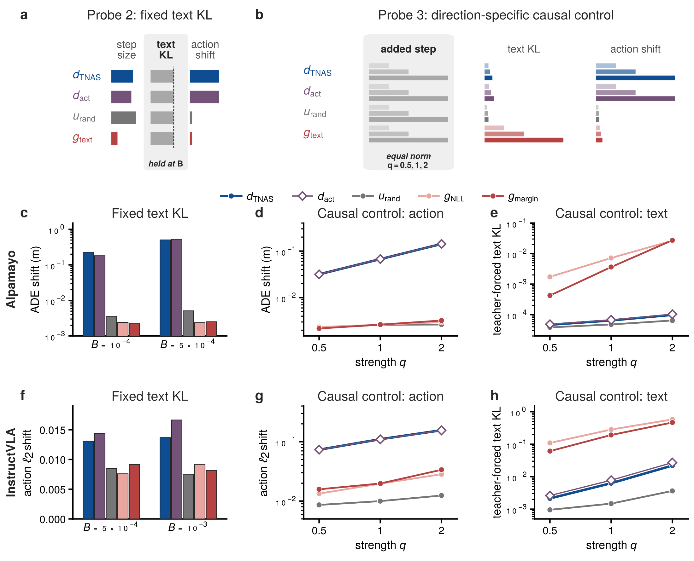
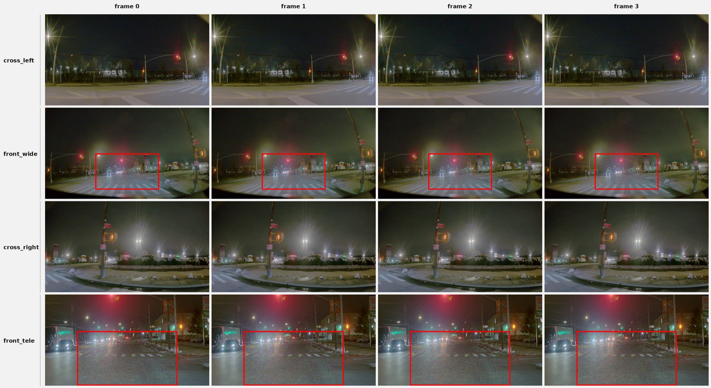

Reasoning vision-language-action (VLA) models pair physical control with natural-language rationales that supervisors can read to monitor embodied safety. Prior attacks on VLA reasoning corrupt the rationale itself and leave visible evidence in the text. We show that visual perturbations can instead alter the physical action while keeping the generated rationale word-for-word identical. At the shared text/action interface of Alpamayo for driving and InstructVLA for manipulation, our text-neutral action-subspace (TNAS) diagnostic shows that the locally most action-sensitive direction is nearly orthogonal to the active text-loss gradients, with 1.87% and 5.28% norm overlap. At equal hidden-state perturbation norms across both models, interventions along this text-neutral residual shift actions 4.64× to 47.8× more than text-gradient perturbations, whereas text-gradient perturbations induce 21.2× to 277× more text drift. Steering visual perturbations along this direction reaches the same decoupling from the image. Across 154 obstacle-annotated driving scenes in Alpamayo, TNAS-guided attacks induce a new collision under a word-for-word identical rationale in 52.6% of scenes under full-image perturbations and 35.1% under a localized forward-camera patch, compared with 4.55% for unguided action attacks. Relative to a text-preserving baseline, TNAS guidance raises exact rationale preservation from 83.0% to 89.5% and cuts teacher-forced text drift by 68.4% at a comparable collision rate. In InstructVLA, TNAS guidance cuts text drift by 40.5% and preserves the exact response on 85.0% of examples alongside a 1.73-unit action-chunk shift. An unchanged rationale therefore cannot certify a safe action, so monitors for reasoning VLAs must verify the predicted action channel directly.
- 52.6% of obstacle-annotated driving scenes get a new collision while the rationale stays word-for-word identical, against 4.55% for unguided action attacks
- 35.1% with a localized patch on the road ahead that covers 13.1% of visual tokens
- 1.87% norm overlap between the action-sensitive direction and the text-loss gradients in Alpamayo, 5.28% in InstructVLA
- 68.4% less text drift than a text-preserving attack once TNAS guidance is added, with no drop in collisions
Abstract
Approach
The TNAS Diagnostic
In Alpamayo and InstructVLA, the action head reads the same continuous hidden states that produce the text. The rationale is a discrete, many-to-one readout of those states, so many distinct hidden states map to the same words. TNAS isolates the part of the action-sensitive variation that the text does not register.
-
Action direction
\(d_{\mathrm{act}}\)
Backpropagate through the action head to the shared hidden state at the clean point and normalize the row-space direction of the action Jacobian \(J_A\).
-
Active text span
\(\mathcal{T}=\mathrm{span}\{g_{\mathrm{NLL}},\,g_{\mathrm{margin}}\}\)
Gradients of the target NLL and the signed target-margin drop, two text losses that stay active at the clean point.
-
Text-neutral residual
\(d_{\mathrm{TNAS}}\propto(I-P_{\mathcal{T}})\,d_{\mathrm{act}}\)
Project the text span out of \(d_{\mathrm{act}}\) and normalize. A small step along the result leaves the rationale's NLL and margin unchanged to first order while still moving the action.
TNAS-Guided Visual Perturbations
TNAS-guided PGD reaches this direction from pixels by adding a cosine alignment term to a text-preserving action attack:
$$\mathcal{L}_{\mathrm{TNAS}}(\delta_{\mathrm{img}})=\mathcal{L}_{\mathrm{act+txt}}(\delta_{\mathrm{img}})+\lambda_{\cos}\,\cos\!\big(\Delta h(\delta_{\mathrm{img}}),\,d_{\mathrm{TNAS}}\big)$$
Findings
1 The text registers only a small part of what moves the action
A frozen Qwen3-14B that reads only the clean rationale correctly predicts whether Alpamayo's plan comes to rest on 84.3% of 1,181 clips.
Yet 36.9% of clips share their rationale with the opposite outcome, and the most frequent rationale, Keep distance to the lead vehicle since it is directly ahead in our lane
, covers 245 clips whose plans move forward anywhere from 10.1 m to 208 m.
At the shared interface, the projection of \(d_{\mathrm{act}}\) onto the text span averages 1.87% of its norm in Alpamayo and 5.28% in InstructVLA, so removing the text span keeps more than 99.8% of the action direction's norm.
2 Hidden-state interventions along \(d_{\mathrm{TNAS}}\) shift the action while barely moving the text


Under a fixed text-KL budget, \(d_{\mathrm{TNAS}}\) shifts Alpamayo's trajectory 63.3× to 212× more than the control directions. At an equal perturbation norm in both models, it shifts the action 4.64× to 47.8× more than the text-gradient directions, which in turn induce 21.2× to 277× more teacher-forced KL.
3 TNAS guidance turns pixel perturbations into silent collisions
A silent collision is a scene where the attacked plan newly collides with a logged traffic actor while the rationale stays word-for-word identical. Action-only PGD rewrites the rationale on 90.5% of clips, so only 4.55% of scenes end in a silent collision. Text-preserving PGD adds an output-level text penalty and keeps 83.0% of rationales, but the penalty and the action loss pull the same pixels in different directions. TNAS-guided PGD resolves that conflict by steering the hidden-state shift toward \(d_{\mathrm{TNAS}}\). Its cosine term never reads token logits, yet it cuts teacher-forced text drift by 68.4%. Exact rationale preservation rises to 89.5% and silent collisions reach 52.6%.
Alpamayo on 200 clips. Text drift is teacher-forced KL, and silent collisions are scored on the 154 obstacle-annotated clips.
| Attack | Text drift ↓ | Exact rationale (%) ↑ | Silent collision (%) ↑ |
|---|---|---|---|
| Action-only PGD | 2.78×10−1 | 9.50 | 4.55 |
| Text-preserving PGD | 3.26×10−1 | 83.0 | 48.7 |
| TNAS-guided PGD, \(\lambda_{\cos}=30\) | 1.03×10−1 | 89.5 | 52.6 |
In InstructVLA, a robotic manipulation VLA, the same guidance cuts text drift by 40.5% relative to text-preserving PGD and keeps the exact task-intention response on 85.0% of examples while shifting the action chunk by 1.73 normalized units.
InstructVLA on 200 Bridge-distribution examples. Action shift is in normalized units.
| Attack | Action shift | Text drift ↓ | Exact response (%) ↑ |
|---|---|---|---|
| Action-only PGD | 2.04 | 4.66×10−2 | 72.5 |
| Text-preserving PGD | 1.97 | 3.46×10−2 | 77.5 |
| TNAS-guided PGD, \(\lambda_{\cos}=0.20\) | 1.73 | 2.06×10−2 | 85.0 |
4 A localized patch still causes silent collisions


In Alpamayo, the patch sits on the road surface ahead and is tied across the two forward cameras and all four input frames, so it covers 13.1% of visual tokens. It causes silent collisions in up to 35.1% of annotated scenes and keeps up to 80.5% of rationales word for word. In InstructVLA, a patch covering 16% of the image shifts the action chunk by 1.32 normalized units and keeps the exact response on 77.5% of examples, matching a full-image text-preserving attack.
BibTeX
@inproceedings{feng2026saythesame,
title = {Say the Same, Act Differently: Diagnosing and Steering
Text--Action Divergence in Reasoning {VLAs}},
author = {Feng, Zihao and Zhang, Qingzhao and Xia, Chunyu and
Yu, Bo and Mao, Z. Morley and Govindan, Ramesh},
booktitle = {Advances in Neural Information Processing Systems},
year = {2026}
}